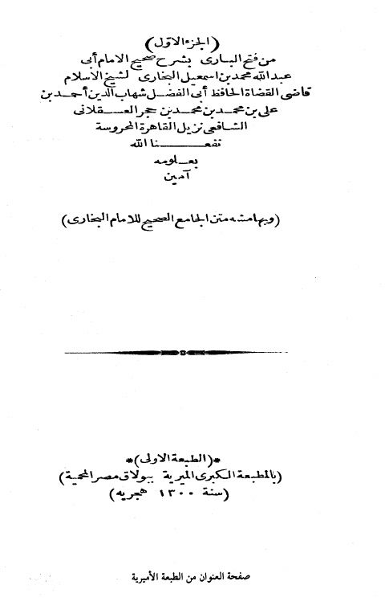
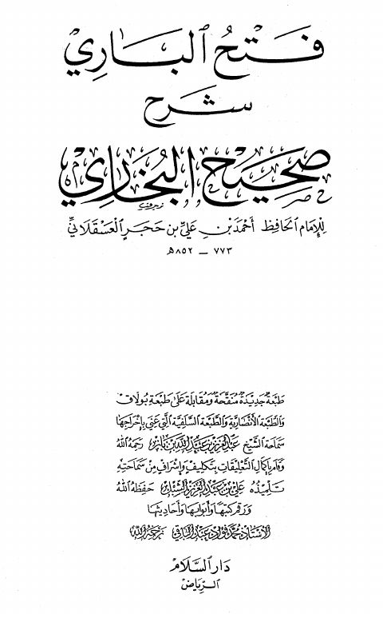

فتح الباري بشرح صحيح البخاري قابل للبحث والنسخ- ط دار السلام فتح الباري بشرح صحيح البخاري قابل للبحث والنسخ- ط دار السلام أحمد بن علي بن حجر العسقلاني
فتح الباري بشرح صحيح الإمام البخاري- ط. دار السلام فتح الباري بشرح صحيح الإمام البخاري- ط. دار السلام أحمد بن علي بن حجر العسقلاني